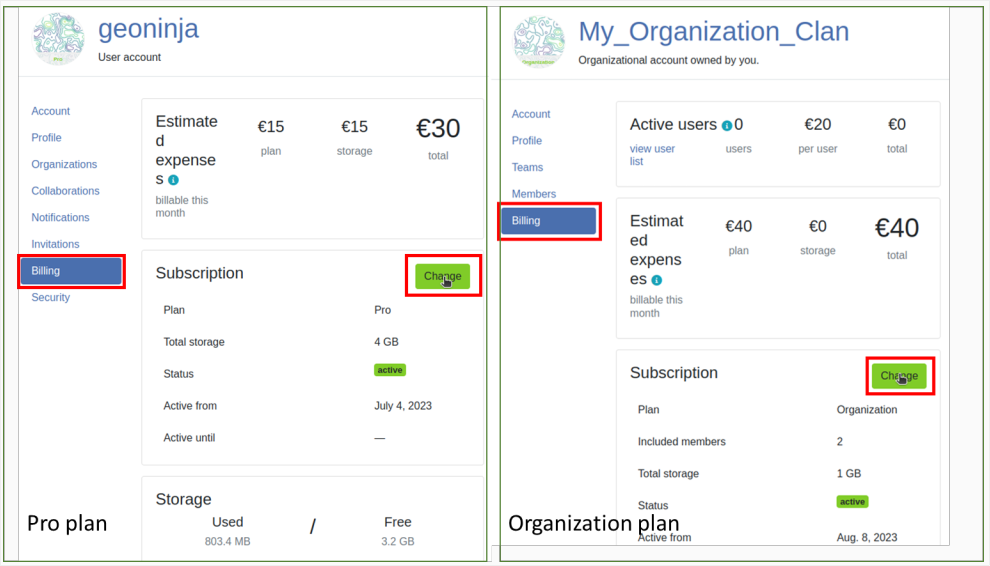
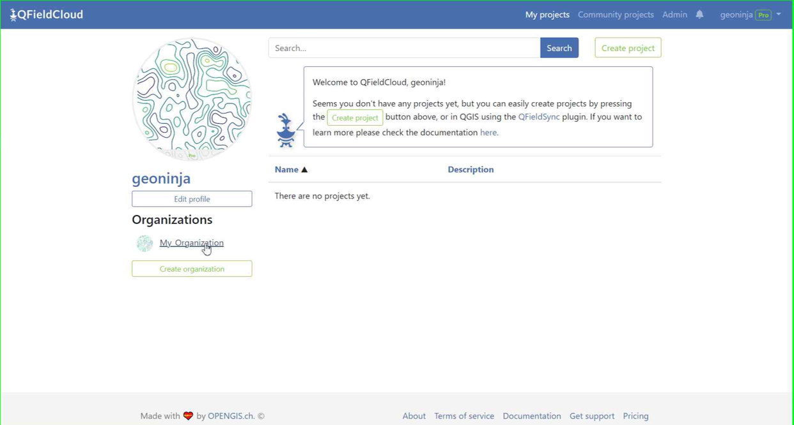
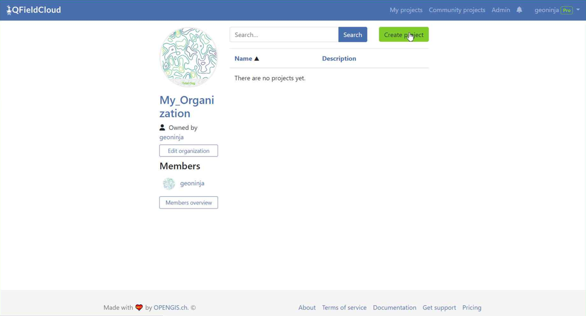

チュートリアル¶
手伝ってください
私たちは、あなたの質問、疑問、アイデアについて話し合うためのコミュニティ・ディスカッション・プラットフォームを用意しています。遠慮なくチェックしてください。
QFieldCloudアカウントを取得する¶
デスクトップの準備
登録ページにアクセスし、詳細を入力して新しいQFieldCloudアカウントを作成してください
{kind=link}
プロフィール編集¶
個人設定を変更します。プロフィールの写真を追加したり、所有権や所属組織の概要を確認したりできます。
課金情報¶
QFieldCloud ProプランまたはOrganizationプランを使用するには、アカウントに課金情報を追加する必要があります。
プロプランの場合は、以下の手順に従ってください：
- ページ右上のユーザー名をクリック
- "プロにアップグレード"をクリック
- サブスクリプションセクションで、アップグレードをクリック
- プロセクションで "アクティベート"をクリックする。
- 「利用規約」をよく読み、利用規約に同意の上、「次へ」。
- 「請求先住所」の欄に必要事項を記入し、「支払いに進む」をクリックする。
組織プランについては、以下の手順に従ってください：
- ページ右上のユーザー名をクリック
- 「組織の作成」をクリック
- 「作成」をクリック
- 150文字以内、アルファベット、数字、および@/./+/-/_で構成される組織名を選択してください。
- 「作成」をクリック
- 必要なストレージ容量を選択してください
- 「利用規約」をよく読み、利用規約に同意の上、「次へ」。
- 「請求先住所」の欄に必要事項を記入し、「支払いに進む」をクリックする。
請求先情報に不備がある場合は、請求 > サブスクリプション > チェックアウト完了に進み、いつでもフォームへの入力を完了することができます。
すべての価格情報は、価格ページでご覧いただけます。
QFieldCloudのサービスの停止をする¶
-
QFieldCloudのサブスクリプションをキャンセルする必要がある場合： 1.1. Proプランのアカウントは、ユーザー名をクリックし、"設定 "を選択してください。 1.2. 組織プランのアカウントでは、組織の名前をクリックし、"組織の編集 "をクリックします。あなたがその組織の所有者である必要があることに留意してください。

-
「課金」セクションに進み、「変更」をクリックします。

-
「サブスクリプションをキャンセル」を選択します。

-
続いて表示されるポップアップウィンドウでキャンセルを確認します。

-
その後、現在の課金期間の終了時にサブスクリプションが終了することを示すNyukiからのメッセージが表示されます。

組織¶
あなたの組織はここにリストアップされています。QFieldエコシステムのコンセプトのチーム、メンバー、役割の詳細をご覧ください。
プロジェクト¶
検索してリストからプロジェクトを選択するか、新規プロジェクトの作成を開始します。

QGIS DesktopでのQFieldCloudへの接続¶
デスクトップの準備
QFieldCloudに接続するには、QGISのプラグイン「QFieldSync」が必要です。次のステップでは、プラグインをインストールし、QFieldCloudとの間でデータを同期する方法を説明します。
QFieldSyncのインストール¶
プラグイン -> プラグインの管理とインストール...メニューからQGISプラグインマネージャーを開きます。
プラグインの一覧からQFieldSyncを探し、プラグインをインストールボタンをクリックして最新版をインストールしてください。
備考
QFieldCloudはまだベータ段階であるため、頻繁に更新と修正が行われます。QFieldSyncプラグインを頻繁にアップグレードしてください。問題が発生した場合は、報告する前に最新のリリースにアップグレードしてみてください。

インストールに成功すると、新しいツールバーが表示されます：

QFieldCloudにログイン¶
QFieldSync ツールバーのクラウドアイコン  をクリックします。
新しいログイン画面が表示されます：
をクリックします。
新しいログイン画面が表示されます：
{kind=link}
アカウント登録時に作成した認証情報を入力してください。
備考
QGISで初めてパスワードを使用する場合、QGISで使用する他のすべてのパスワードを管理するマスターパスワードの設定を求められます。マスターパスワードの詳細については、こちらをご覧ください： QGISドキュメント
プロジェクト一覧画面では、現在のユーザーが青い下線で表示され、左下にはログアウトボタン、右側には新しいプロジェクトを作成するためのクラウドボタン、そして最も新しいプロジェクトリストを取得するための更新ボタンがあります。新規登録ユーザーには空のテーブルが表示され、新しいプロジェクトを作成するとすぐにリストが増えます。プロジェクト一覧画面はこのようになっています：

アイコンは、さまざまなプロジェクトのクラウドとローカルのステータスを示しています。
ローカルステータス:
は、リモートクラウドプロジェクトのみが存在することを示します。
 は、クラウド・プロジェクトがローカルにも保存されていることを示します。
は、クラウド・プロジェクトがローカルにも保存されていることを示します。
クラウドステータス:
赤 —> ステータスが失敗しました -> プロジェクトが無効で、クラウドに理解されません。ユーザーは.qgs/.qgzプロジェクトを修正/アップロードする必要があります。 茶色 —> ステータスがビジー状態です。この間はプロジェクトで多くのことはできません。 緑: status ok —> プロジェクトはクラウドから正常にアンデストされました。QFieldでダウンロードを試みることができますが、成功は保証されません。
各プロジェクトのステータスはツールチップで表示されます。
リスト内のプロジェクトをダブルクリックすると、特定のプロジェクト・プロパティを表示、編集することができます。
{kind=link}
QFieldとQField SyncでデフォルトのQFieldCloudサーバーを変更する¶
QFieldとQFieldSyncは、デフォルトでapp.qfield.cloudのQFieldCloudサービスに接続します。
QFieldとQFieldSyncが接続するデフォルトのQFieldCloudサーバを変更できます：
- QField または QFieldSync でログイン画面を開きます。
- Nyukiアイコン（青いハチのQFieldCloudロゴ）をダブルタップします。
- この操作により、希望するQFieldCloudサーバーアドレスを入力するフィールドが表示されます。
- 指定されたフィールドに、希望するサーバーの詳細を入力します。 (このフィールドを空にすると、app.qfield.cloudにあるデフォルトのQFieldCloudサーバに接続されます。)

{kind=link}
備考
QFieldSyncは複数のQGISプロファイルで同じクラウドプロジェクトをサポートしないことに留意することが重要です。同期の問題を避けるために、QFieldCloudプロジェクトには単一のQGISプロファイルを使用することをお勧めします。
クラウドプロジェクトの作成と設定¶
左下のクラウドボタンをクリックして新規プロジェクトを作成する。まず、新規プロジェクトの作成方法を以下の中から選択します。
- "現在開いているプロジェクトをクラウドプロジェクトに変換する" 現在開いている QGIS プロジェクトから新しい QFieldCloud 互換プロジェクトが作成されます。その際、データセットはローカルミラーとして機能するエクスポートディレクトリにコピーされます。ベクトルデータセットは複数のデバイスからのデータ同期を容易にするためにジオパッケージ形式に変換され、その他のデータセットタイプは新しいプロジェクトのロケーションにコピーされます。
現在のプロジェクトを変換するには、完全に空のディレクトリが必須です。
- "新しい空のQFieldCloudプロジェクトを作成する" 新しい空のQFieldCloudプロジェクトが作成されます。選択したローカルディレクトリ内に、プロジェクトファイルをルートとして、プロジェクトに関連するすべてのファイルを移動する必要があります。プロジェクトファイルは同期ボタンをクリックしたときのみアップロードされます。選択したディレクトリにQGISプロジェクトファイルが1つ以上含まれていないことを確認してください。
{kind=link}
プロジェクト名、説明、ローカルディレクトリを入力するフォームが表示されます。ローカルディレクトリでは、さまざまな状況が得られます：
- 入力されたパスにQGISプロジェクトファイルが含まれていません。
- 入力されたパスには1つのQGISプロジェクトファイルが含まれます。
- プロジェクトを保存するローカルディレクトリを選択してください。
- 入力されたパスは相対パスです。絶対パスを入力してください。
- 入力されたパスはディレクトリではありません。有効なディレクトリパスを入力してください。
- 入力されたパスは既存のディレクトリではありません。このフォームを送信した後に作成されます。
- ディレクトリに複数のプロジェクトファイルが見つかりました。ルートディレクトリにQGISプロジェクトを1つだけ残してください。
組織内にプロジェクトを作成する¶
組織におけるプロジェクトの作り方：
オプション1：ローカルプロジェクトを組織QFieldCloudプロジェクトに直接変換します：
-
Follow the steps configure your cloud project, until you get the "Project details".
-
プロジェクトの所有者を自分の組織に変更する。

-
"作成"をクリックして変換と同期を開始します。完了すると、プロジェクトがQFieldCloudの組織にあることが確認できます。

備考
この機能を使用するには、QField Sync 4.6以降が必要です。
オプション2：組織へ直接アップロードする：
-
組織を選択する。

-
組織に入ったら、「プロジェクトを作成」をクリックする。

-
「空の新規プロジェクトを作成」を選択する。

-
新しいプロジェクトは概要で見ることができます。

-
QGISのQFieldSyncで、新しいプロジェクトが表示されるので、「選択されたクラウドプロジェクトを編集」をクリックします。

-
プロジェクトを保存するフォルダを選択します。

-
選択したフォルダに、すでに作業済みのプロジェクトを貼り付けるか、新規プロジェクトを保存することができます。

-
フォルダにプロジェクトが格納されたら、それを同期することができます。

-
最後に、変更をクラウドにプッシュします。

-
ファイルが組織プロジェクトに存在することを確認できます。

オプション3：自分のアカウントから組織にプロジェクトを移動する：
-
QFieldCloudに既にプロジェクトがある場合（クラウドプロジェクトの設定を参照）。プロジェクトで「設定」をクリックし、このプロジェクトの所有権を譲渡するを選択して、転送する組織を選択します。

-
転送を確認するポップアップウィンドウが表示されます。続行するには、"Here be dragons"と入力し、"プロジェクトを転送"をクリックします。

QField用にプロジェクトレイヤーを設定する¶
QFieldSyncツールバーの5番目のアイコンをクリックしてプロジェクトレイヤーを設定します  . ここでQFieldCloudのレイヤーアクションを設定できます。ほとんどの場合、オンラインレイヤーかオフラインレイヤーかを設定する必要があります。よりきめ細かい制御を行うには、詳細設定でレイヤーごとにアクションを設定できます。レイヤーの設定方法については、Get Started guide for QFieldSync を参照してください。
. ここでQFieldCloudのレイヤーアクションを設定できます。ほとんどの場合、オンラインレイヤーかオフラインレイヤーかを設定する必要があります。よりきめ細かい制御を行うには、詳細設定でレイヤーごとにアクションを設定できます。レイヤーの設定方法については、Get Started guide for QFieldSync を参照してください。
共同編集には GeoPackage レイヤーを使用することをお勧めします。ベクターフォーマットのサポートについては、advanced setup guideを参照してください。
備考
主キーフィールドのない実験的データソース（Shapefile、GeoJSONなど）を使用する場合は、各フィーチャーを一意に識別する主キーとして使用する小文字のfidフィールドを用意する必要があります。
QFieldがサポートしているラスターおよびベクター・レイヤー・フォーマットはすべて、読み取り専用データとして使用できます。

Enabling Automatic Pushing of Changes to QFieldCloud¶
With this functionality, users and managers of QFieldCloud projects can enforce automatic pushing of pending changes to QField devices in the field, as well as specify the interval in between automated pushes. The functionality is activated through a project setting, allowing remote activation.
-
Access Project Settings: Navigate to the QField panel in the Project Settings dialog provided by the QFieldSync plugin.
-
Enable Auto-Push: Toggle the "Automatically push pending changes on the following interval" option and establish your preferred interval.


Note
Benefits:¶
- Real-Time Updates: Ensures prompt synchronization of field data with the QFieldCloud project.
- Streamlined Workflow: Minimizes manual intervention and ensures surveyors do not need to worry about synchronization, helping them focus on data quality.
Considerations:¶
- Network Stability: Ensure stable internet connectivity for auto-push functionality.
- Battery Optimization: Implement strategies to mitigate battery consumption on QField devices during prolonged fieldwork.
プロジェクトのアップロード¶
一度設定したら、クラウドボタンを押して同期ダイアログを開くことができます。ここで、ローカルファイルとクラウド上のファイル、どちらを選ぶかを決めなければなりません。
{kind=link}
これでQFieldCloudにプロジェクトとファイルが表示されるはずです。
QFieldCloudの変更通知を有効にする¶
- アカウントの設定にアクセスします。
- 通知セクションに移動します。ここでは、アカウントに登録されているEメールアドレスで受信したい通知の頻度をカスタマイズすることができます

通知されるイベントは以下の通り: - ユーザーが作成された - 組織が作成された - 組織が削除された - 組織のメンバーが追加された - 組織のメンバーが削除された - チームが作成された - チームが削除された - チームにメンバーが追加された - チームのメンバーが削除された - プロジェクトが作成された - プロジェクトが削除された - プロジェクトのメンバーが追加された - プロジェクトのメンバーが削除された
あなたがアクターではないイベントの通知を受け取ります。これらの通知は、特にあなたの組織の他のメンバーやあなたのプロジェクトの共同作業者によって開始されたイベントのためのものです。
"Optimized Packager"でプロジェクトを強化する¶
すべてのプロジェクトで、非推奨の「QGIS Core オフライン編集」ではなく、新しい「Optimized Packager」を使用することをお勧めします。プロジェクトの "設定 "タブの "Packaging Offliner "でパッケージャーを設定してください。
The "Optimized Packager" supports consolidating filtered layers of same datasource into a single offline layer, respecting distinct symbology but also using less storage. Here is an example to illustrate this feature:
設定例：¶
- レイヤー 1.1:
- データソース:
layers.gpkg - テーブル:
layer1 -
フィルタ:
id % 2 = 1 -
レイヤー 1.2:
- データソース:
layers.gpkg - テーブル:
layer1 - フィルタ:
id % 2 = 0
結果:¶
新しいオフライナーの場合
- 一つのレイヤーはlayer1 からのデータと特定のフィルタを組み合わせてオフラインのGeoPackageで生成されます。
古い（QGIS）オフライナーの場合：
- 2つの別々のレイヤーが作成され、それぞれがフィルタリングされたデータセットを表します：
- レイヤ 1: id % 2 = 1でフィルタされます
- レイヤ2: id % 2 = 0でフィルタされます

Note
This configuration must be set in the Settings page of each project in QFieldCloud.
フィールド・デバイス¶
フィールドマーク
QFieldのインストール¶
PlayストアからQFieldの最新バージョンをダウンロードしてインストールしてください。一番下までスクロールし、ベータテストを有効にしてください。 このバージョンを本番で使用しないでください！
備考
QField 2.0はまだベータ段階なので、定期的な更新と修正が少なくとも毎週あります。少なくとも週に一度は実験的なQFieldをアップグレードしてください。問題が発生した場合、報告する前に最新のリリースで再現してみてください。
プロジェクトに取り掛かる¶

ユーザー名とパスワードを入力してログインする

デバイスにダウンロードするプロジェクトを選択します：
{kind=link}
変更を同期する¶
Make a change to your data. Either create a new feature, delete a feature, or modify the geometry or attributes. Open the blue cloud button on the top left of the screen:
{kind=link}
Choose an action with the change you made to your data. Each of the actions have an explanation what you should expect to happen:
{kind=link}
クラウド上のプロジェクトにアクセスできるすべての人が、あなたの変更を利用できるようになりました。
QFieldCloudの高度な設定およびQFieldCloud 技術参考情報に詳細な情報があります。